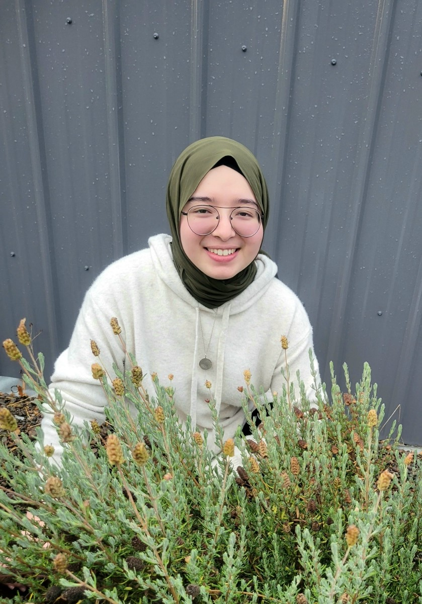

Computer Science (Applied) | Human-Computer Interaction Focus
moussaof@oregonstate.edu
Hi! I'm Fatima (Fa-ti-ma) and I am a second year CS student at OSU with a focus on HCI.
I've never really done anything related to web development. The closest experience and actually my first brush with programming languages was when my dad was teaching/showing me how he built his Quran website. He introduced the idea of CSS and a flexbox and challenged me to display two images of a book side by side, which I was able to do without his help. Unfortunately, I didn't retain much knowledge from that time.
I hope to learn new languages for web development and how I can use those languages to design and implement aesthetically-pleasing and usable websites.
Yes.
I have done 12 years of online public school (K-11).